import numpy as np
rng = np.random.default_rng(seed = 313)
rngGenerator(PCG64) at 0x264E3A77A00Updated 5/9: Added solution to exercise 5.
For us, there are two reasons to learn about stochastic simulation. The first is that for complex systems, simulation can be an alternative to mathematical analysis, sometimes the only one. The second reason is that through simulation, we can get more feeling for random variables, and this is why we study stochastic simulation at this point in the book. (Dekking et al., p. 72)
The notes below.
(Optional) Dekking et al., Chapter 6: Simulations. Except Chapter 6.4 The single-server queue.
We start by defining an random number generator (rng). Computers do not usually generate truly random numbers. Instead they generate so-called pseudo-random numbers using methods such as the linear congruential generator. (It is possible to generate truly random numbers using the RDRAND instruction on x64 processors, but this feature is almost never used for various reasons.)
import numpy as np
rng = np.random.default_rng(seed = 313)
rngGenerator(PCG64) at 0x264E3A77A00As you can see, the object rng is a Generator(PCG64), i.e., a random number generator.
Generator objects have methods, such as uniform and normal, that may be used to generate random values.
rng.uniform(0, 1, size = 10)array([0.63182242, 0.46427464, 0.77927765, 0.40253182, 0.61196237,
0.32392294, 0.10567386, 0.68671495, 0.01786417, 0.60813899])This code generates a column vector of ten elements randomly sampled from the uniform distribution on \([0,1]\). The size argument is a Numpy dimension, hence you can write:
rng.uniform(0, 1, size = (2, 10))array([[0.77322932, 0.23260444, 0.56660324, 0.96823875, 0.93026402,
0.71578432, 0.29358623, 0.53439132, 0.81535993, 0.42267216],
[0.96857697, 0.96626312, 0.24506702, 0.44363894, 0.45995697,
0.86179148, 0.45618709, 0.90139015, 0.51322552, 0.93442797]])This is an array with \(2\) rows and \(10\) columns.
Our generator rng was defined using the argument seed = 313. This is used for reproducibility. If you run the same code twice with the same seed, the result is going to be the same.
rng1 = np.random.default_rng(seed = 313)
rng2 = np.random.default_rng(seed = 313)
(rng1.uniform(0, 1, size = (2, 2)), rng2.uniform(0, 1, size = (2, 2)))(array([[0.63182242, 0.46427464],
[0.77927765, 0.40253182]]),
array([[0.63182242, 0.46427464],
[0.77927765, 0.40253182]]))But the results will not be the same if we do not provide the seed!
rng1 = np.random.default_rng()
rng2 = np.random.default_rng()
(rng1.uniform(0, 1, size = (2, 2)), rng2.uniform(0, 1, size = (2, 2)))(array([[0.64565139, 0.20551363],
[0.52794709, 0.5600136 ]]),
array([[0.86133137, 0.09222427],
[0.03566325, 0.19193855]]))Reproducibility is important in scientific applications, as the reader of your work can exactly reproduce your simulations on his own computer. It’s also relevant for our coursework, as it allows your teacher to automatically grade your submissions.
The first two arguments of rng.uniform specify the start point and end point of the interval we sample from.
rng1 = np.random.default_rng(seed = 313)
rng2 = np.random.default_rng(seed = 313)
x = rng1.uniform(2, 5, size = (2, 2)) # starting at 2 and ending at 5,
y = rng2.uniform(0, 1, size = (2, 2)) # starting at 0 and ending at 1.
(x, 3*y + 2)(array([[3.89546727, 3.39282392],
[4.33783294, 3.20759547]]),
array([[3.89546727, 3.39282392],
[4.33783294, 3.20759547]]))Now \(x\) and \(y\) are the same. This will always be the case.
Generate an array of uniformly distributed numbers on \([1,5]\) with \(3\) rows and \(4\) columns.
x = rng1.uniform(2, 5, size = (3, 4))
xarray([[3.8358871 , 2.97176881, 2.31702157, 4.06014485],
[2.05359251, 3.82441698, 4.31968797, 2.69781331],
[3.69980971, 4.90471626, 4.79079206, 4.14735295]])You can generate normally distributed random values with mean mu and standard deviation sigma using rng.normal(mu, sigma, size). Again, the size argument tells numpy how many rows, columns and potentially more dimensions you want your array to have.
x = rng1.normal(0, 1, 10000)Let’s verify that x is normally distributed by plotting its histogram.
import seaborn as sns
import matplotlib.pyplot as plt
plt.clf()
sns.histplot(x, stat = "density")
plt.show()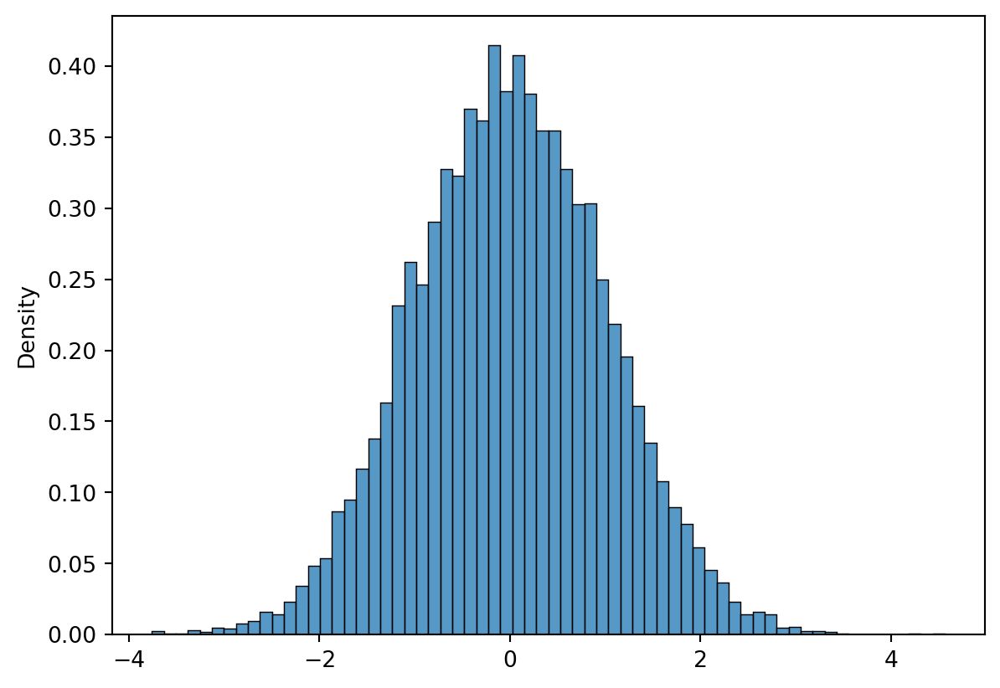
Recall the formula for the density of the normal distribution, \[f(x;\mu,\sigma) = \frac{1}{\sqrt{2\pi}\sigma}\exp{\lbrack-\frac{1}{2}(x-\mu)^2}\rbrack.\] To verify that the histogram is normal, we can overlay the density of a normal on top of it.
y = np.linspace(-5, 5, 1000)
def normpdf(x, mu = 0, sigma = 1):
return np.exp(-(x - mu) ** 2 * 0.5) * 1/(np.sqrt(2 * np.pi) * sigma)
plt.clf()
sns.histplot(x, stat = "density")
plt.plot(y, normpdf(y), color = "red")
plt.show()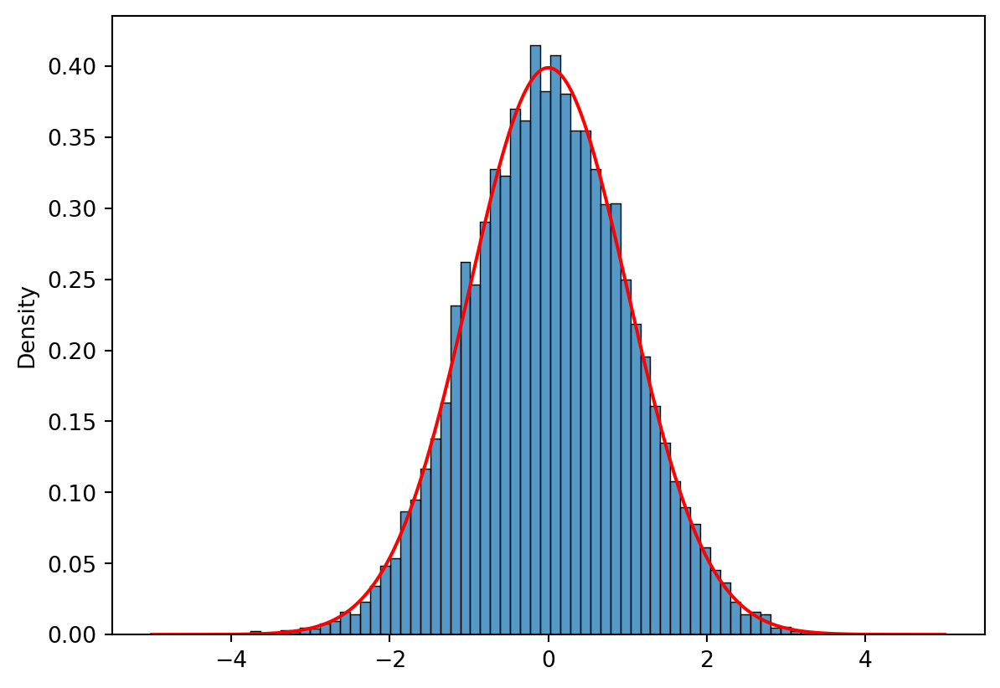
The Generator object supports random sampling from many other distributions too. See the documenation for a complete list. The examples below are especially important.
| Function | Distribution |
|---|---|
integers |
Random integers from low (inclusive) to high (exclusive). |
choice |
Sample from an array with or without replacement. |
uniform |
Uniformly distributed numbers. |
random |
Uniformly distributed numbers on [0,1]. |
normal |
Normally distributed numbers. |
standard_normal |
Normally distributed numbers with mean 0 and standard deviation 1. |
exponential |
Exponentially distributed numbers with scale parameter. |
standard_exponential |
Exponentially distributed numbers with scale parameter 1. |
Simulate \(10,000\) random variables from a standard exponential. Verify that the random variables were simulated from an exponential by overlaying the standard exponential density.
x = rng1.standard_exponential(10000)
y = np.linspace(0, 6, 1000)
plt.clf()
sns.histplot(x, stat = "density")
plt.plot(y, np.exp(-y), color = "red")
plt.show()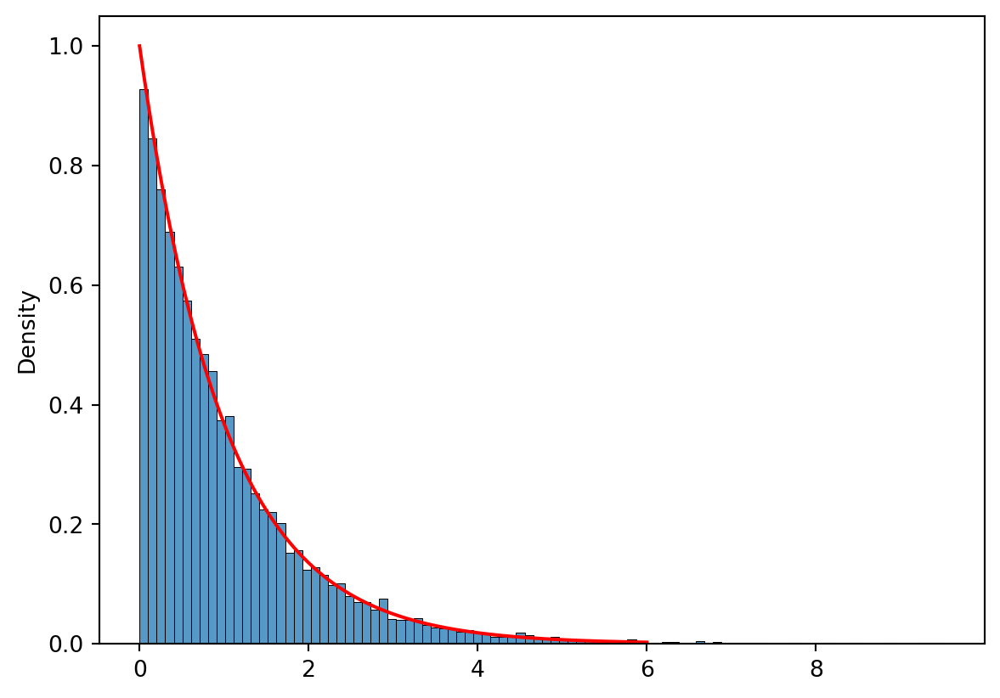
Random number generators are often used to calculate probabilities that are hard to calculate by hand. You might be able to calculate, say, what he probability of getting a sum equal to \(7\) is when throwing \(2\) dice. But what about the probability that the maximal value \(6\) or that the sum is \(7\)? This is also doable by hand, but it’s easier to do it by machine.
rng = np.random.default_rng(seed = 313)
throws = rng.integers(1, 7, size = (10000, 2))
# throws contaisn 10000 rows of two dice throws.
totals = throws.sum(axis = 1)
maxs = throws.max(axis = 1)
(totals, maxs)(array([6, 5, 6, ..., 9, 8, 9], dtype=int64),
array([4, 3, 5, ..., 6, 5, 6], dtype=int64))To calculate our probability, we need either totals == 7 or maxs == 6. We can use vectorized “OR” using the Numpy function logical_or to calculate this.
x = np.logical_or(totals == 7, maxs == 6)
xarray([False, False, False, ..., True, False, True])Then we can take their mean to figure out the probability.
x.mean()0.4134Thus the probability is approximately \(0.41\). (Observe that Numpy automatically interprets True as 1 and False as 0 when forced to interpret boolean values as integers.)
In practice, we would write all of this in one go, probably using a function.
def prob(rng, n_reps = 10000):
throws = rng.integers(1, 7, size = (10000, 2))
return np.logical_or(throws.sum(axis = 1) == 7, throws.max(axis = 1) == 6).mean()
prob(rng)0.422The result of this simulation is slightly different from the last one. This is due to randomnes, pure and simple. As we have already generated values from our rng, we would have to reset it to get the same value as before.
rng = np.random.default_rng(seed = 313)
prob(rng)0.4134Suppose that \[X_1,X_2,\ldots,X_k\] are \(k\) iid exponential variables with density \(\frac{1}{\beta} e^{-\frac{1}{\beta} x}, \beta > 0\), where \(\beta\) is the scale parameter. It has been claimed that the minimum of \(k\) such variables are exponentially distributed with parameter \(\beta / k\), i.e., \(\min(X_1,X_2,\ldots,X_k)\) has density \(\frac{k}{\beta} e^{-\frac{k}{\beta} x}\). Let’s try to verify this using simulations.
rng = np.random.default_rng(seed = 313)
x = rng.exponential(scale = 2, size = (10000, 10))
minimas = x.min(axis = 1)Let’s plot and verify
plt.clf()
sns.histplot(minimas, stat = "density")
y = np.linspace(0, 2, 100)
plt.plot(y, 10/2 * np.exp(-10/2 * y), color = "red")
plt.show()
minimas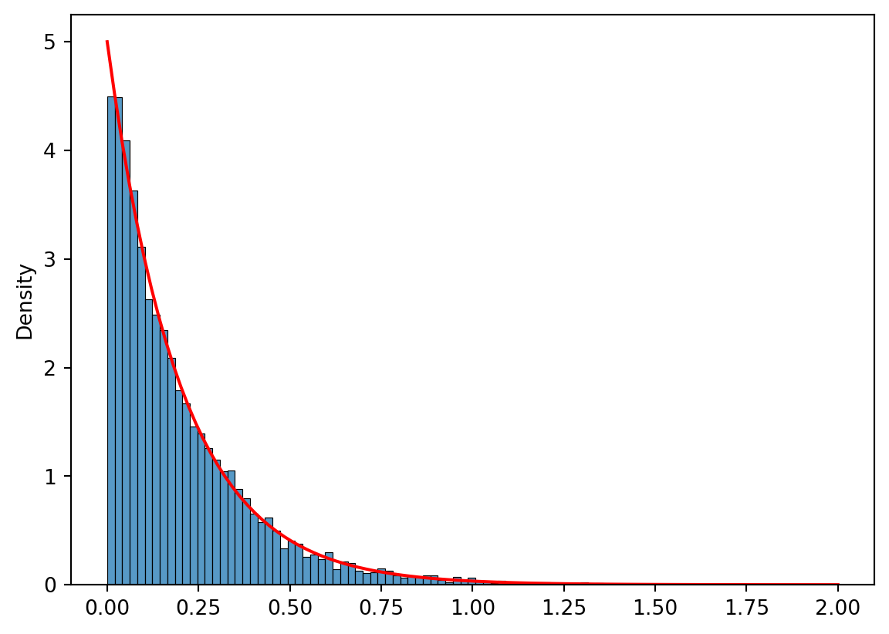
array([0.01273357, 0.26827137, 0.0231306 , ..., 0.03719032, 0.08173748,
0.074854 ])Turn the code above into a function of \(k\) and \(\beta\). Verify the formula visually for \(k = 7, 99\) and \(\beta = 1, 100\).
rng = np.random.default_rng(seed = 313)
def plotter(rng, beta, k):
x = rng.exponential(scale = beta, size = (10000, k))
minimas = x.min(axis = 1)
sns.histplot(minimas, stat = "density")
y = np.linspace(0, minimas.max(), 100)
plt.plot(y, k/beta * np.exp(-k/beta * y), color = "red")
plt.show()
plt.clf()
plotter(rng, 1, 7)
plt.clf()
plotter(rng, 10, 7)
plt.clf()
plotter(rng, 100, 7)
plt.clf()
plotter(rng, 1, 99)
plt.clf()
plotter(rng, 10, 99)
plt.clf()
plotter(rng, 100, 99)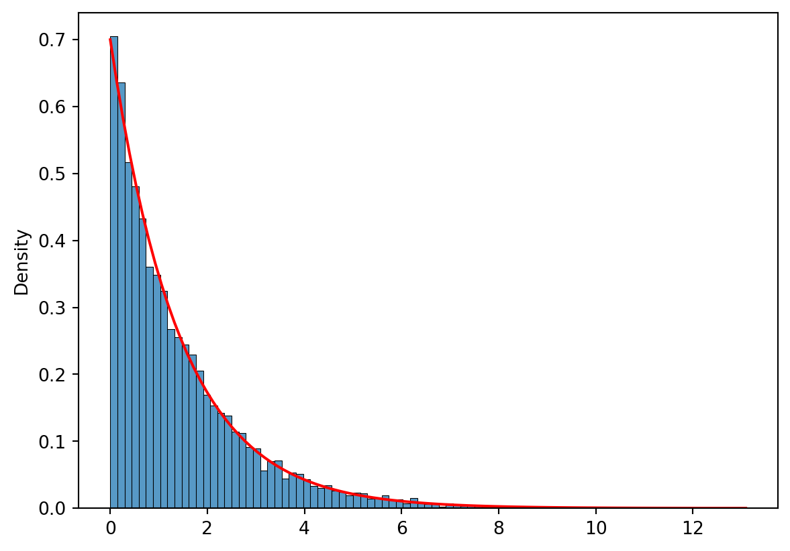
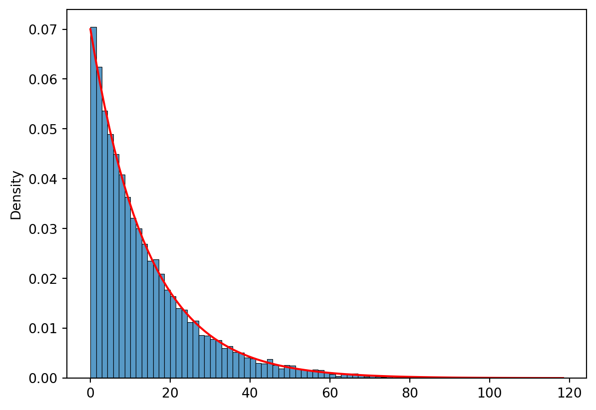
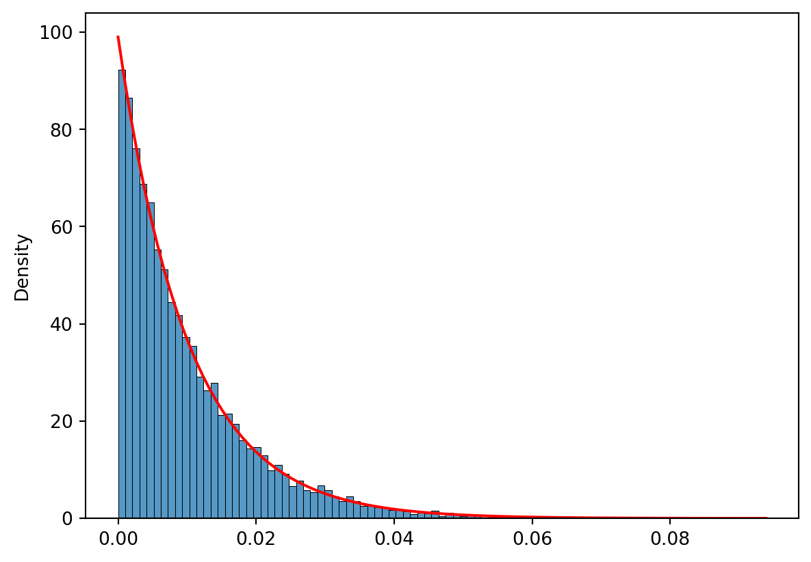
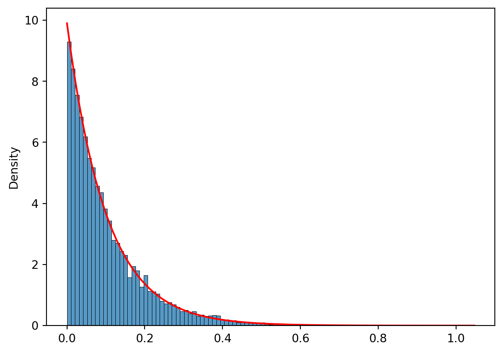
Write a function maximum_throw that approximates the probability of the maximal throw among throw throw. In other words, you throw throw dice, and calculate the maximum of them. To to approximate the probability, do this many times and use the np.unique function. (This is done in video 3!). Plot a bargraph of maximum_throw alongside a bar graph for minimum_throw when throw = 5 in both cases. What do you see?
def maximum_throw(throws, rng, n_reps = 10 ** 5):
"""
Returns a dictionary where "face" is the face of the die and "probability"
is the approximate probability that said face is the maximal die after
"throws" throws of the dice.
n_reps is the number of repetitions used in the simulation.
"""
results = rng.integers(low = 1, high = 6 + 1, size = (n_reps, throws))
maximums = np.apply_along_axis(func1d = np.max, axis = 1, arr = results)
uniques, counts = np.unique(maximums, return_counts = True)
return {"face" : uniques, "probability" : counts / n_reps}
def minimum_throw(throws, rng, n_reps = 10 ** 5):
"""
Returns a dictionary where "face" is the face of the die and "probability"
is the approximate probability that said face is the minimal die after
"throws" throws of the dice.
n_reps is the number of repetitions used in the simulation; rng is a
random number generator.
"""
sims = rng.integers(low = 1, high = 6 + 1, size = (n_reps, throws))
results = np.apply_along_axis(func1d = np.min, axis = 1, arr = sims)
uniques, counts = np.unique(results, return_counts = True)
return {"face" : uniques, "probability" : counts / n_reps}
# Let's simulate and plot!
minimal_throws = minimum_throw(5, rng = rng)
maximal_throws = maximum_throw(5, rng = rng)
fig, ax = plt.subplots(1,2)
sns.barplot(x = "face", y = "probability", data = maximal_throws, ax = ax[0])
sns.barplot(x = "face", y = "probability", data = minimal_throws, ax = ax[1])
plt.show()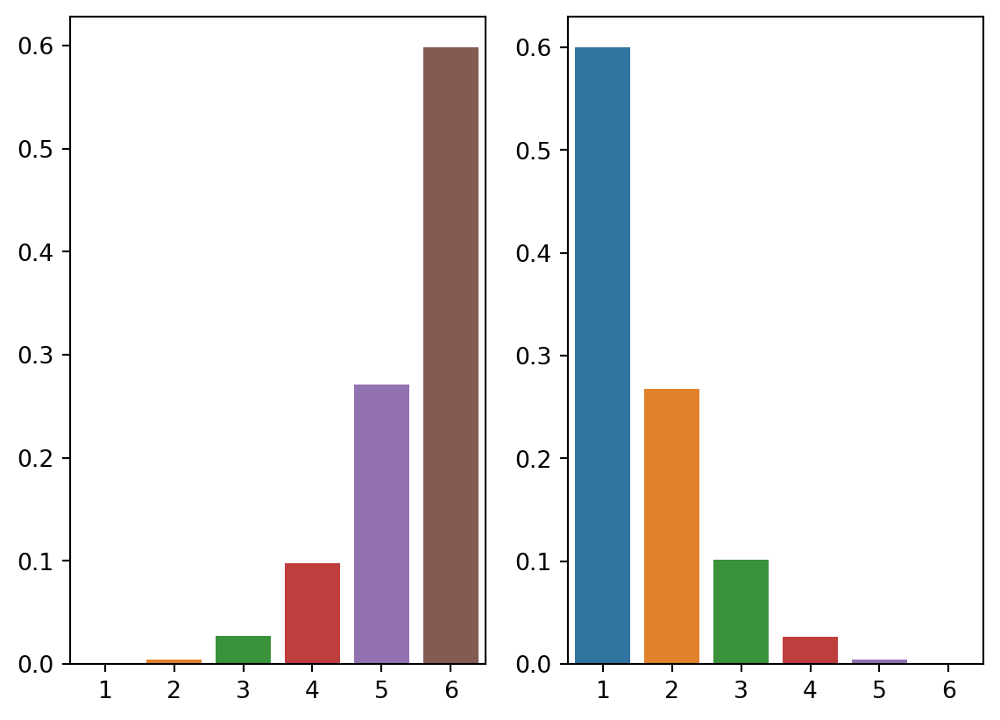
Write a function sum_throw that finds the probability of obtaining every possible sums of throw dice. Make a bar plot of the distribution when throw equals 7.
def sum_throw(throws, rng, n_reps = 10 ** 5):
"""
Returns a dictionary where "sum" is the sum of the dice and "probability"
is the approximate probability that said sum occured.
n_reps is the number of repetitions used in the simulation.
"""
results = rng.integers(low = 1, high = 6 + 1, size = (n_reps, throws))
maximums = np.apply_along_axis(func1d = np.sum, axis = 1, arr = results)
uniques, counts = np.unique(maximums, return_counts = True)
return {"sum" : uniques, "probability" : counts / n_reps}
# Let's simulate and plot!
simulated_throws = sum_throw(7, rng = rng)
sns.barplot(
x = "sum",
y = "probability",
data = simulated_throws)
plt.show()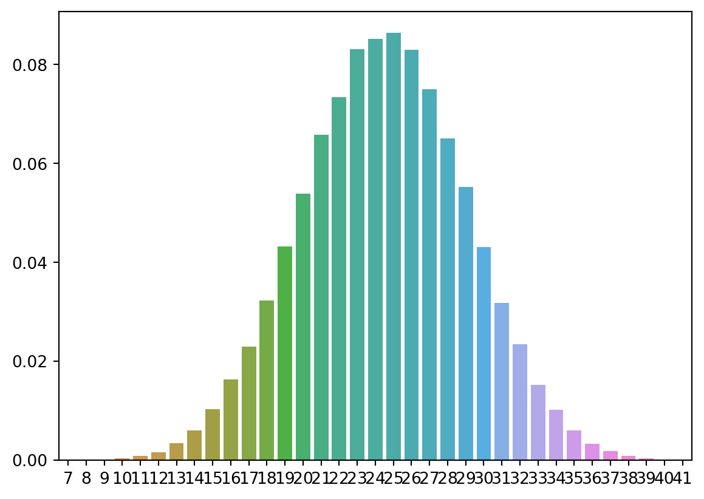
Write a function that calculates the expected value of the sums in (2), i.e, sum(probs * value).
def sum_expected(throws, rng, n_reps = 10 ** 5):
"""
Approximates the expected value of sum of "throws" dice throws.
n_reps is the number of repetitions used in the simulation; rng is a
random number generator.
"""
simulated_throws = sum_throw(throws, rng)
sums = simulated_throws["sum"]
probabilities = simulated_throws["probability"]
return np.sum(sums * probabilities)Let’s plot the expected values, checking the linearity of expectation, i.e, \(E(\sum X_i) = \sum E(X_i)\). When every \(X_i\) have the same expectation, we’ll have \(E(\sum X_i ) = n E(X_1\)) when we sum over \(n\) iterations.
xs = range(1, 17)
ys = [sum_expected(throws, rng) for throws in xs]
sns.scatterplot(x = xs, y = ys) # Expects the function y = a*x for some a!
plt.show()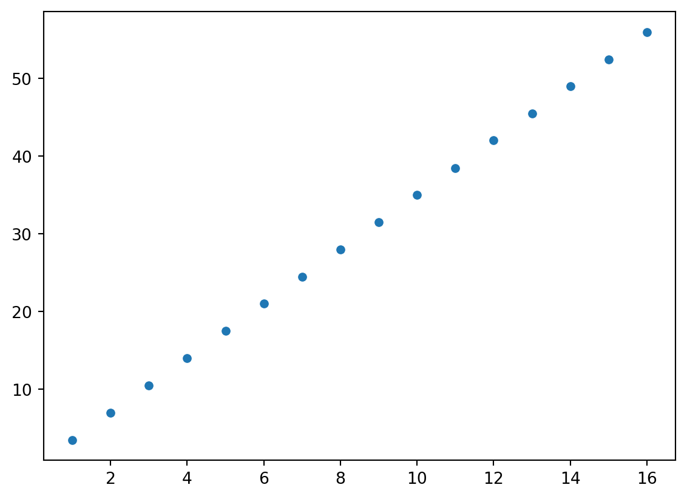
Write a function that finds the probability of obtaining every possible product of throw dice. Remember the docstring. Find the probability that the product of 5 dice throws exceeds 3888.
Hints: Look up np.max, np.sum.
def product_throw(throws, rng, n_reps = 10 ** 5):
"""
Returns a dictionary where "product" is the product of "throws" throws and
"probability" is the approximate probability that the product equals
"product".
n_reps is the number of repetitions used in the simulation; rng is a
random number generator.
"""
sims = rng.integers(low = 1, high = 6 + 1, size = (n_reps, throws))
results = np.apply_along_axis(func1d = np.product, axis = 1, arr = sims)
uniques, counts = np.unique(results, return_counts = True)
return {"product" : uniques, "probability" : counts / n_reps}
simulated_throws = product_throw(5, rng)
# The probability that the product exceeds 3888:
products = simulated_throws["product"]
probabilities = simulated_throws["probability"]
sum([probabilities[i] for i, _ in enumerate(products) if products[i] > 3888])
### Coda: Always a good idea to generalize your functions!
def throw_dice(throws, func, rng, n_reps = 10 ** 5):
"""
Returns a dictionary where "result" is the result of applying func to
"throws" throws and "probability" is the approximate probability that the
result equals "result".
n_reps is the number of repetitions used in the simulation.
"""
simulation = rng.integers(low = 1, high = 7, size = (n_reps, throws))
result = np.apply_along_axis(func1d = func, axis = 1, arr = simulation)
uniques, counts = np.unique(products, return_counts = True)
return {"result" : uniques, "probability" : counts / n_reps}Make a Python function that displays a histogram and density for the beta distribution, found in np.random. It takes the arguments n, a, and b, then simulates n observations from a beta distribution with parameters a and b. It displays a histogram of the observations on [0,1] with the true Beta density superimposed.
import numpy as np
import matplotlib.pylab as plt
import seaborn as sns
import scipy.stats as st
rng = np.random.default_rng(seed=313)
def sim_beta(a, b, n):
"""Simulate n beta(a,b) variables and plot a histogram."""
x = rng.beta(a, b, n)
obj = st.beta(a, b)
z = np.linspace(0, 1, 10)
sns.histplot(x, stat="density")
plt.plot(z, obj.pdf(z))
plt.show()
sim_beta(2, 7, 10000)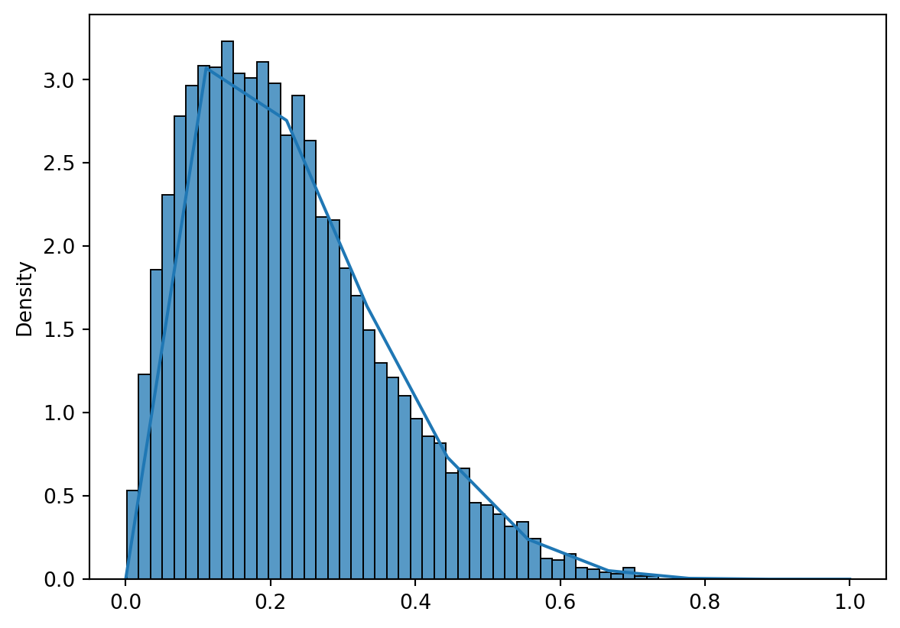